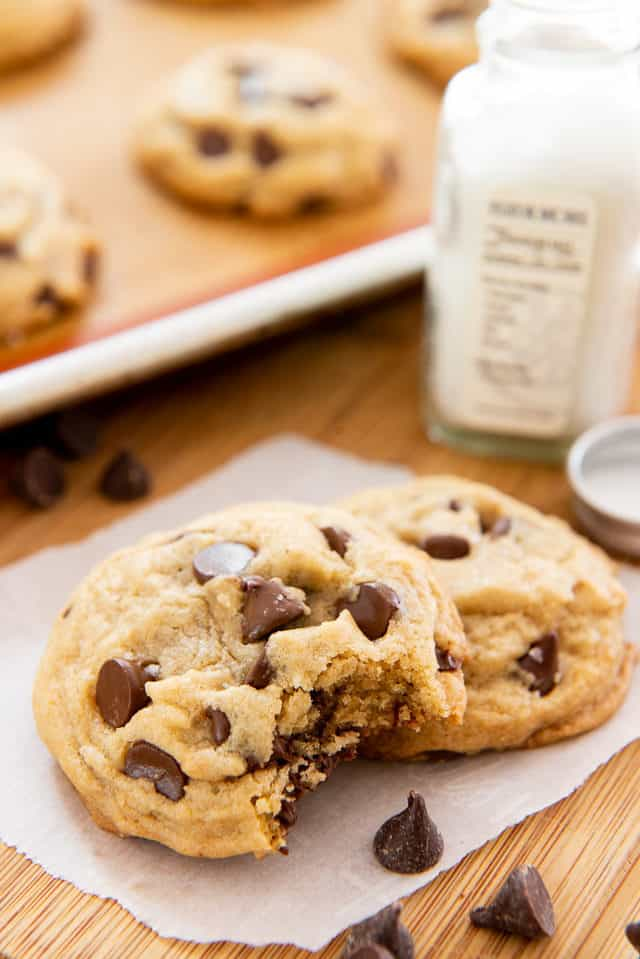

Chcolate Chip Cookies

A timeless classic of a cookie.
Here is my take on the classic Chocolate Chip Cookie. Best served warm! The buttery, chocolate flavor is out of this world!
Ingredients
- 1/2 Cup Butter
- 1/2 Cup Granulated Sugar
- 1/4 Cup Brown Sugar (packed)
- 2 Teaspoons Vanilla Extract
- 1 Large Egg
- 1 3/4 Cups All-Purpose Flour
- 1/2 Teaspoon Baking Soda
- 1/2 Teaspoon Kosher Salt
- 1 Cup Semi-Sweet Chocolate Chips
Directions
- Preheat the oven to 350 F.
- Microwave the butter for about 40 seconds. Butter should be completely melted but shouldn't be hot.
- In a large bowl, mix butter with the sugars until well-combined.
- Stir in vanilla and egg until incorporated.
- Add the flour, baking soda, and salt. Please read the recipe note about properly measuring flour.
- Mix dough until just combined. Dough should be soft and a little sticky but not overly sticky.
- Stir in chocolate chips.
- Scoop out 1.5 tablespoons of dough (medium cookie scoop) and place 2 inches apart on baking sheet.
- Bake for 7-10 minutes, or until cookies are set. They will be puffy and still look a little underbaked in the middle.